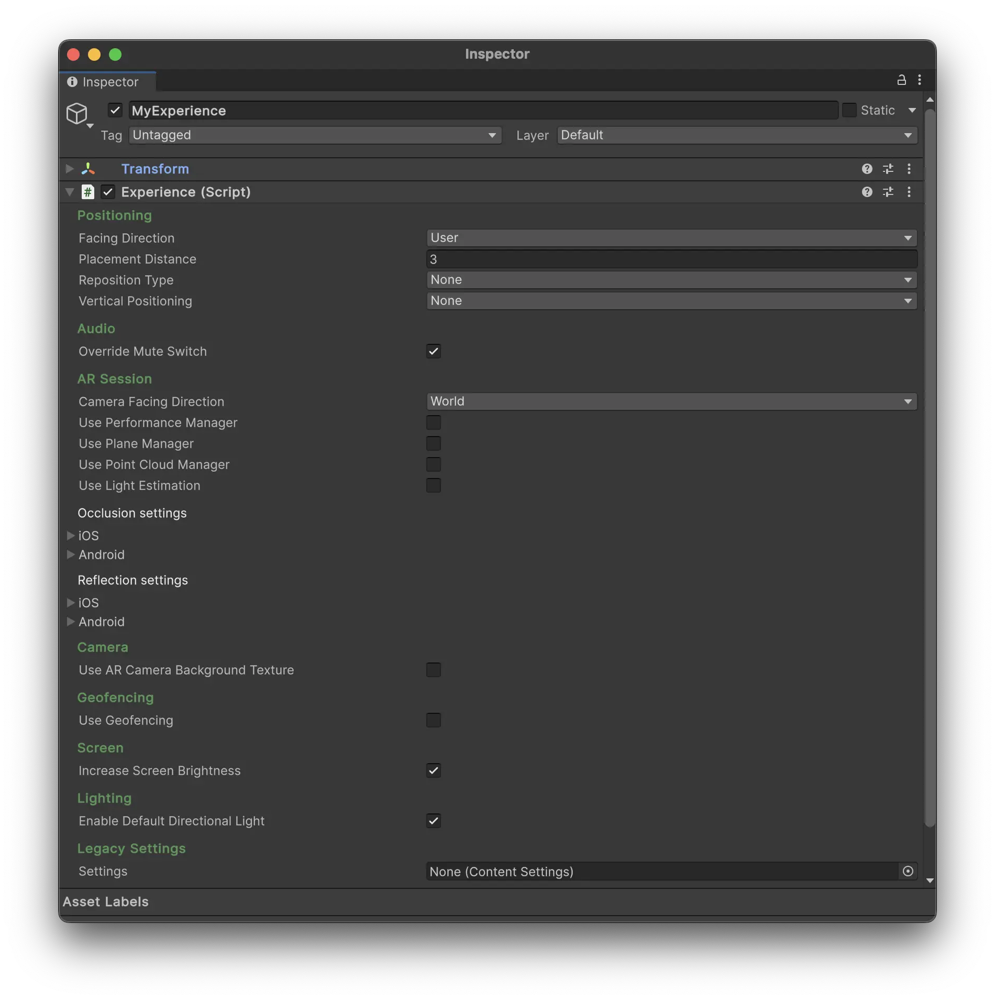

Experience Component
The Experience component is a core part of Meadow, which tells the platform that this is an experience that should be displayed in the app. It holds all the settings that define how your experience should be presented.

Position
- Facing Direction: Determines the initial facing direction of the experience. Options include:
- User: Faces the user’s current direction. Non-geospatial experiences only.
- North: Aligns the experience to face geographic north. Geospatial experiences only.
- Placement Type: Determines how the experience is initially placed in the AR space. This is set in the webapp and cannot be changed in the Unity editor.
- In Front of Camera: Places the experience in front of the camera.
- Geospatial: Places the experience at a specific geographic location using Google Visual Positioning System.
-
Placement Distance: The distance at which the experience is placed when using the “In Front of Camera” placement type.
- Reposition Type: Determines how the experience should be repositioned as location data improves. For geospatial and experiences who use Vertical Positioning: Floor.
- None: No repositioning.
- Smooth: Smoothly moves the experience to the new location.
- Instant: Instantly jumps the experience to the new location.
- Vertical Positioning: Specifies how the experience should be positioned vertically:
- None: No vertical positioning. The experience 0,0,0 will be at the level of the device.
- Floor: Positions the experience 0,0,0 on the ground using plane detection.
- Altitude: Uses altitude data from location services. This can be inaccurate and should be used with caution.
- Reposition Threshold: The minimum distance (in meters) between the current and new location required to trigger repositioning.
Audio
- Override Mute Switch: When enabled, this setting overrides the mute switch on iOS devices, ensuring audio playback even when the device is muted.
AR Session
- Camera Facing Direction: Sets the initial camera direction:
- World: Uses the rear-facing camera.
- User: Uses the front-facing (selfie) camera.
Planes
-
Use Plane Manager: Enables or disables plane detection. This is enabled by default if you use Vertical Positioning: Floor.
-
Plane Prefab: The prefab used for detected planes. If empty a default plane prefab with a Mesh Collider will be used.
-
Use Floor Plane: When enabled, creates a large plane aligned to the lowest detected horizontal plane.
-
Floor Prefab: The prefab used to visualize the floor plane. If empty a default plane prefab with a Mesh Collider will be used.
-
Plane Detection Mode: Specifies which types of planes to detect (horizontal, vertical, or both). Only detect the planes you need. Plane detection is performance-intensive and should be used sparingly.
Point Cloud
-
Use Point Cloud Manager: Enables or disables the AR subsystems point cloud visualization.
-
Point Cloud Prefab: The prefab used to visualize each point.
AR Camera Background
-
Use AR Camera Background Texture: Enables or disables the use of the camera feed as a background.
-
AR Camera Background Mode: Sets the rendering mode for the AR camera background (CPU or GPU).
Occlusion
AR Occlussion functions differently depending on platform, and is split into platform-specific settings. Keep in mind that occlusion is performance-intensive.
- Use Occlusion: Enables or disables occlusion.
- Environment Depth Mode: Configures the depth estimation for enviroment mode. This option usually looks bad in outdoor environments.
- Temporal Smoothing: Enables or disables temporal smoothing for occlusion.
- Human Segmentation Stencil Mode: Configures the quality of human segmentation for stencils.
- Human Segmentation Depth Mode: Configures the quality of human segmentation for depth.
- Occlusion Preference Mode: Sets the preference for environment or human occlusion.
Reflections
Platform-specific reflection settings:
- Use Reflections: Enables or disables environmental reflections.
- Automatic Placement: Enables or disables automatic placement of reflection probes.
- Environment Texture Filter: Sets the filtering mode for environment textures.
Device
- Increase Screen Brightness: When enabled, this setting increases the screen brightness to maximum for better visibility.
Performance
-
Use Performance Manager: When enabled, this will trigger a Visual Scripting event when the device FPS reaches the specificed treshold.
-
Target FPS Android: The target frame rate for Android devices.
-
Target FPS iOS: The target frame rate for iOS devices.
Geofencing
-
Use Geofencing: When enabled, this feature prompts users to return to or leave the content area based on their distance from the starting position.
-
Geofencing Radius: The distance (in meters) from the starting position at which geofencing notifications are triggered.
-
Geofencing Start: The delay (in minutes) before geofencing becomes active.
Lighting
- Enable Default Directional Light: When enabled, this setting adds a default directional light to the scene. Untoggle this if you use your own lighting setup.
Legacy settings
- Settings: Use a legacy Content Settings file. This is deprecated and will be removed in future versions.
Public Methods
- GetLocationDataValue(string propertyid, out object value, out Type type): Retrieves location-specific data and its type based on the provided property ID.